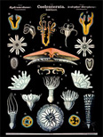

|

Karl Georg Friedrich Rudolf Leuckart (1822-1898)
Quick Links:
Rudolph Leuckart, the famed zoologist and parasitologist, was born in Helmstedt, Germany, in 1822. As a youth, he showed an early interest in zoology and in insects in particular. While attending medical school at the University of Gottingen, he studied under the renowned zoologist, Rudolph Wagner, who encouraged him to pursue his research in this branch of science. An excellent student, Leuckart won a university prize for his dissertation of 1845, and two years later was appointed zoology lecturer. Soon after, he undertook his first expedition to the North Sea for the study of marine invertebrates. As a result of his studies, he divided Cuvier's Radiata into two new groups which he name Coelenterata and Echinodermata. His classification of the Metazoa remains a model to this day.
In the field of parasitology, his studies of the liver fluke, Pentastomium, Taenia, and of Trichina spiralis were highly significant. His work with parasitic infections proved that Taenia saginata occurs only in cattle, and that Taenia solium occurs only in pigs. His studies of Trichina strongly supported Virchow's campaign that led to the first meat inspection laws in germany.
In 1869, Leuckart was appointed professor at the University of Leipzig. The University had become a mecca of learning by 1880, attracting students and researchers from many foreign countries. An outstanding teacher, Leuckart won the admiration and friendship of his students and co-workers.
The Festschrift, published in 1892, commemorated Leuckart's seventieth birthday, and seven out of nine American students and fellow scientists listed in this work wereaffiliated with the Marine Biological Laboratory (MBL) -Charles O. Whitman (Director), Edward G. Gardiner, C.I. Herrick, E.L. Mark, William Marshall, T. Neuman, William Patten, and J.M. Taylor.
Leuckart's Die menschlichen Parasiten und von ihnen herruenden Krankheiten was for many years the leading text on parasitology in American medical schools.
His Wandtafeln (wall charts), produced from 1877 to 1892, were used worldwide as teaching aids. Fol. I consists of 101 charts, of which the MBL has a complete set. Fol. II consists of 12 charts, of which the MBL has 8. These remarkable charts, now stored in a specially constructed cabinet in a controlled environment, have been repaired, tabulated, photographed, and digitized so that they can continue to be a unique teaching aid in the study of zoology. The representations available here were scanned from slides. Each image was imported in Adobe Photoshop and sharpened. Contrast and color balances were adjusted and the image saved in GIF format. Each image is between 400K-500K and on some systems may be larger than a standard 15 inch screen will display.
|
|